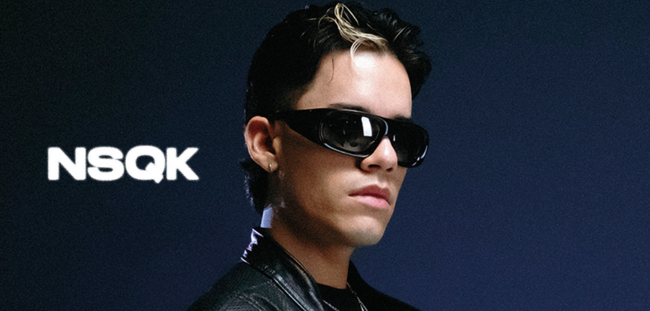
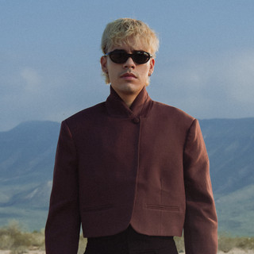
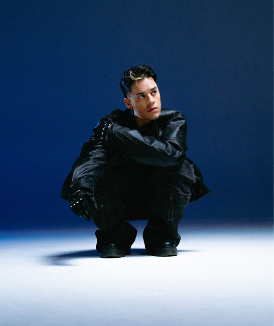
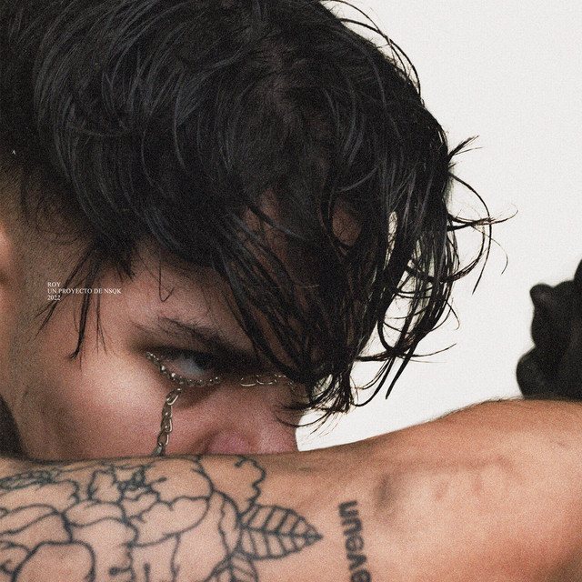
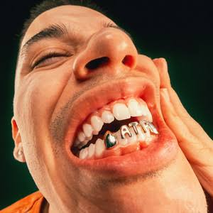
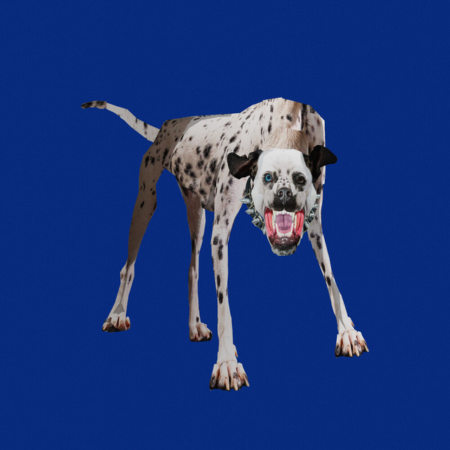

Rodrigo Torres de la Garza, mejor conocido por su nombre artístico Nsqk (pronunciado Nesquik), es un cantante, compositor y productor mexicano de música urbana y alternativa.

De donde viene?
Nsqk nació en Monterrey, pero pasó gran parte de su infancia criándose en Houston, Texas. A los 13 años, tras
regresar a México en medio de una crisis económica global, comenzó a adentrarse formalmente en el mundo de la
música, fuertemente influenciado por productores de música electrónica y dubstep como Skrillex, Avicii,
Deadmau5 y Zedd.
Porque comenzo?
Descargó el software FL Studio y empezó a producir pistas desde su habitación. Más adelante, se introdujo al
mundo del rap escuchando a artistas como Tyler, the Creator y Mac Miller.
Al no encontrar vocalistas para las pistas que creaba, decidió empezar a cantar él mismo a los 18 años, lo que lo llevó a definirse primeramente como productor antes que cantante.
Mientras estudiaba la carrera de mercadotecnia, formó el dúo South Boys junto a Refugee y posteriormente se unió al colectivo regiomontano No pedí permiso.
Porque su nombre?
Su nombre artístico surgió originalmente en internet como una broma derivada de un colectivo de productores
llamado Nesquick Squad.





*basado en apple music*